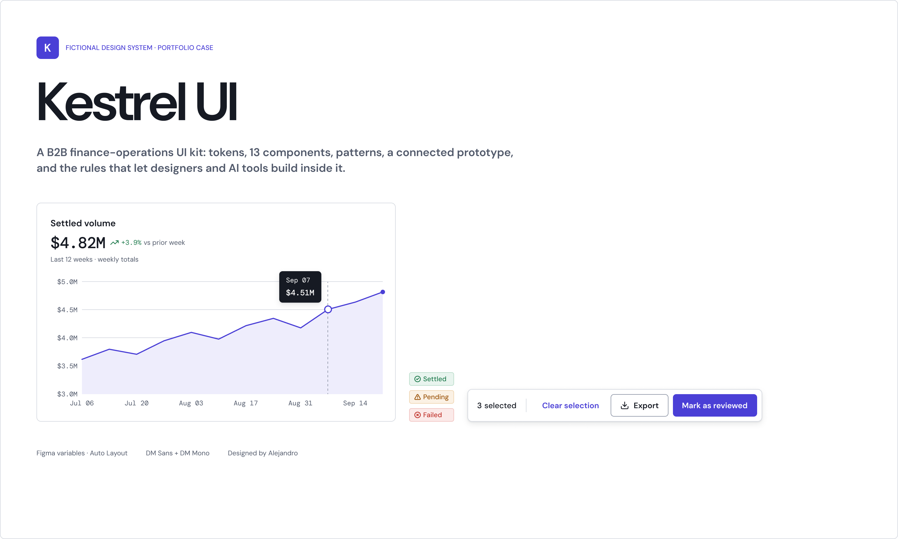
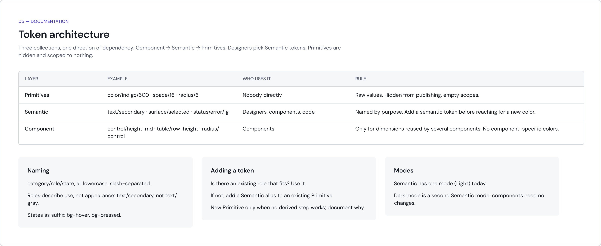
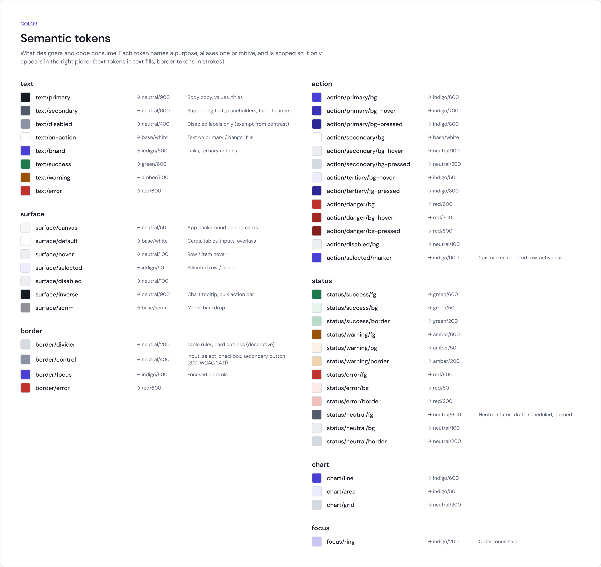
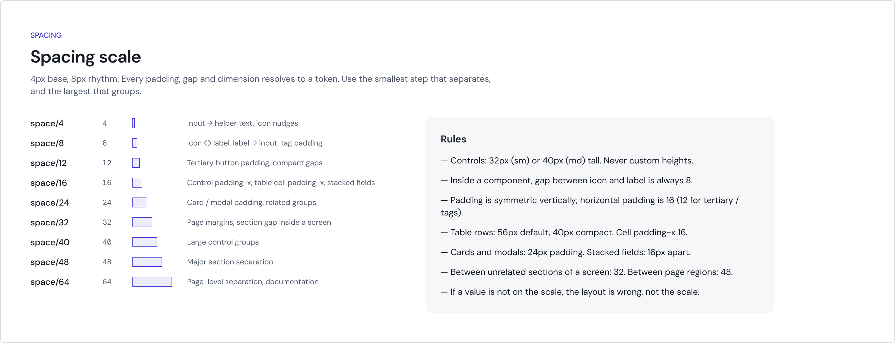
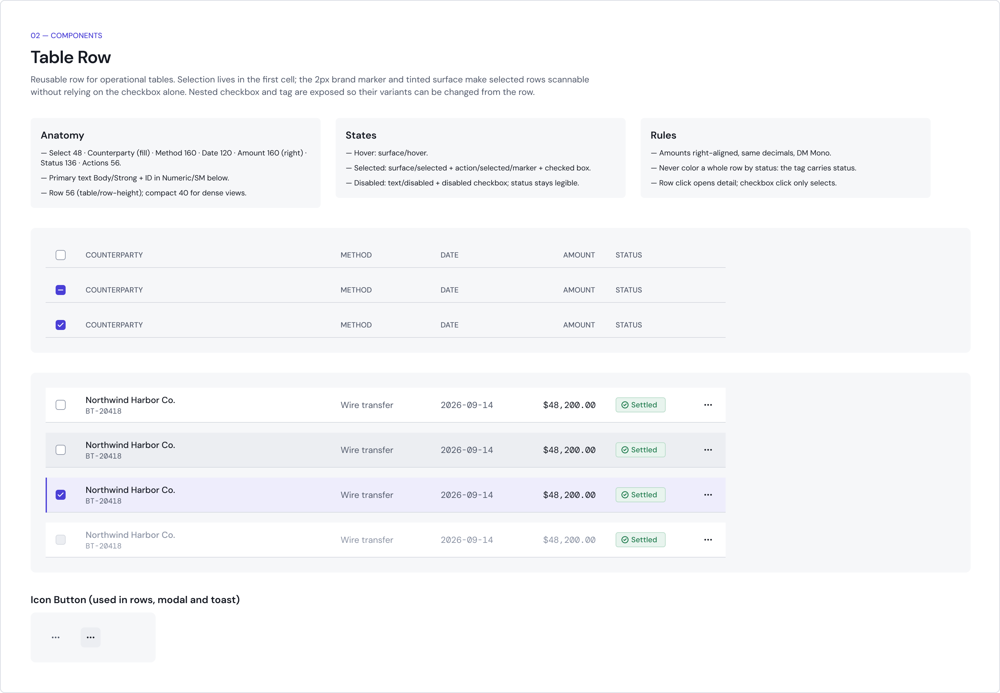
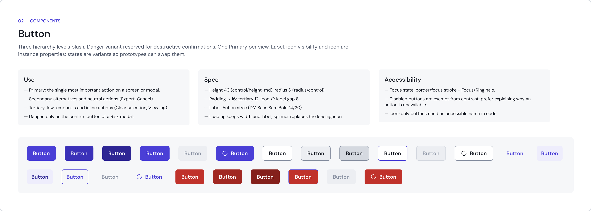
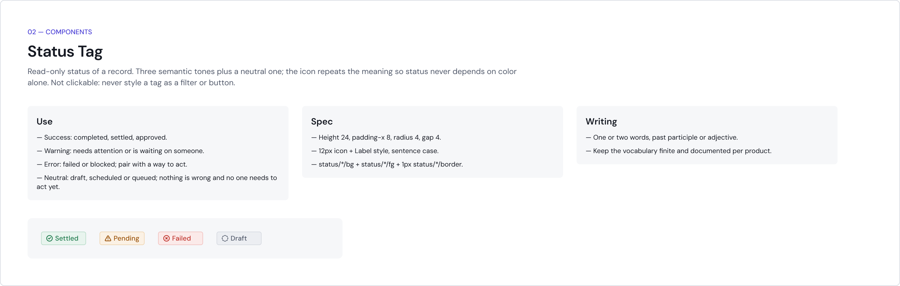
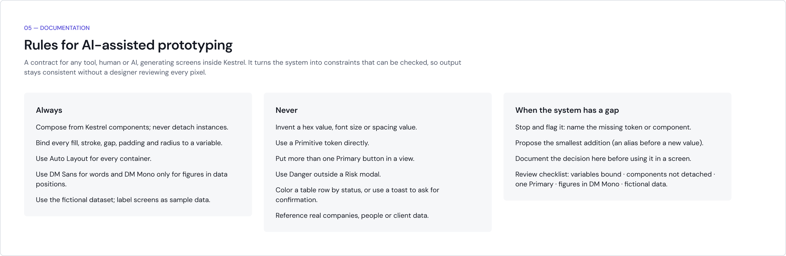
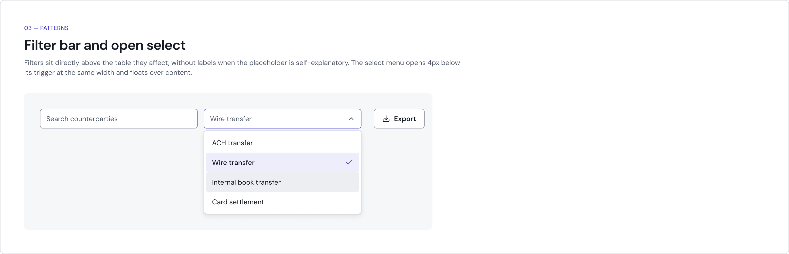

Building a design system from zero, then teaching AI to follow it
I built a lending company’s design system from scratch, shipped it with engineering as a coded library, and later made it the rulebook for AI-assisted prototyping.
- Role
- First in-house product designer
- Team
- 2 designers, ~8 engineers
- Timeline
- 2022–2026
- Tools
- Figma, Storybook, Chromatic, Jira, Claude, Claude Design

Context
When I joined Camino Financial, now Quantum Lending Solutions, there was no in-house product design and no shared system. Over the next years the system had to serve three kinds of products: an internal servicing platform for operations and underwriting teams, a portal for small-business borrowers, and a portal for lending partners.
My role
I built the design system, defined how design and engineering hand off work, and became the formal visual approver for front-end changes in Chromatic. In 2026, together with my design teammate, I redesigned our process around AI.
The problem
Design and engineering had no shared components, and handoff depended on scattered conversations instead of a clear process. Years later a new problem appeared: AI tools could produce screens fast, but nothing stopped them from inventing components, colors or spacing outside the system.
Process and decisions
Foundations before components
I started with tokens and variables, so every component would inherit the same decisions instead of repeating them.



Blueprints engineering could build from
Components came with documentation and blueprints, and engineering implemented them as a coded library used across all products.



A gate, not a guideline
No visual change reached production without review in Chromatic. Consistency stopped depending on memory.
From design to production
- FigmaDesigned with the kit’s components and tokens
- StorybookEngineering builds the coded component
- Chromatic reviewVisual approval by design
- MergeShips to every product
A process that expects AI
Our workflow went from four stages to six, adding AI exploration and structured feedback before the first real iteration.
Process, before and after
Before
- To do
- In progress
- Ready for review
- Done
After
- To do
- AI exploration
- Shared for feedback
- First iteration
- Ready for review
- Done
One source of truth for AI
We set up Claude and Claude Design to prototype only with the UI kit’s components, tokens and variables. If something new was truly needed, it had to be documented first, then reviewed for the system.


Outcome
- One coded library across every product.
- Typical design tasks went from about a week to 2–3 days (my estimate).
- My director of product noted that the team could prototype without waiting on design capacity.
What I’d do differently
I’d measure cycle time from day one. The process clearly got faster, but I can only give an estimate, not a number.
All visuals are reconstructed illustrations built with Kestrel UI, a fictional brand, using fictional data. They show the principles and patterns of the work, not the company’s actual screens.
Next case study